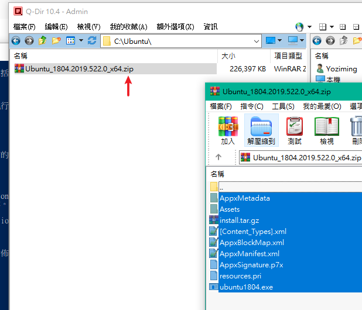
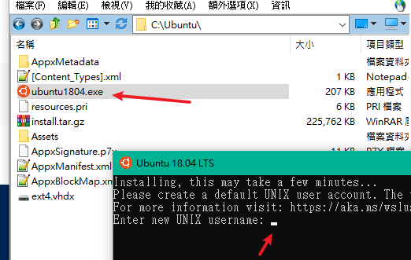
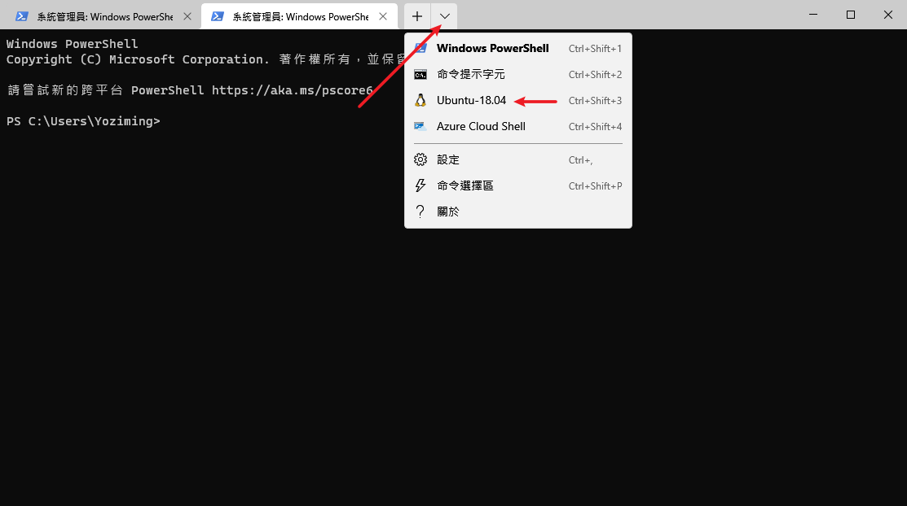
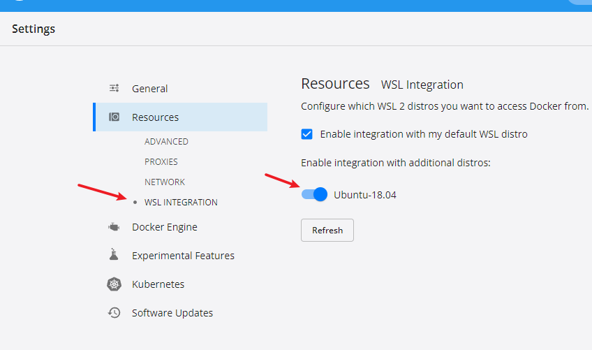
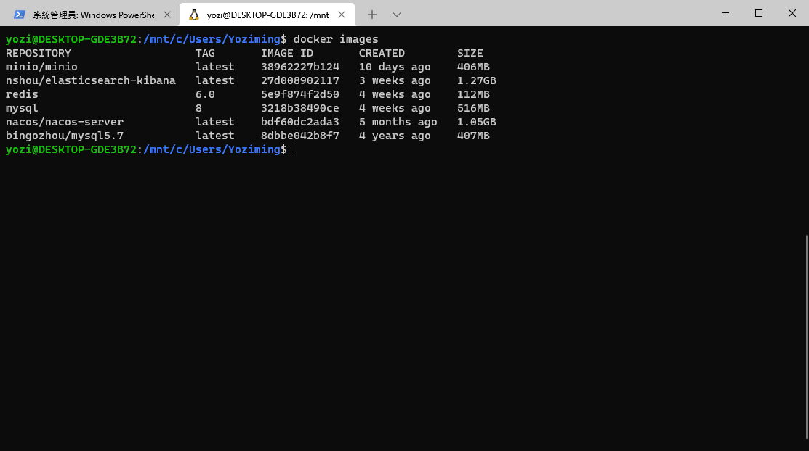

DockerDekstop掛載相關設定
解決windowsDocker容器檔案交流問題
Docker Dekstop
-
Docker Dekstop本身可以在Windows 上執行(基於wsl)，簡單使用沒問題，然而需要匯出匯入、掛載檔案就比較麻煩，
-
wsl2可以透過加入一個中間橋(例如一個ubuntu)掛載雙方來達成操作檔案的目的
-
PS.一般教學會用到Windows市集安裝，但我個人特別不喜歡Windows內建的那些東西，啥更新、市集全都在安裝後就砍光光了，所以只能全手動
必要環境
Windows 10 64-bit：Home or Pro 2004 (build 19041) or higher, or Enterprise or Education 1909 (build 18363) or higher.
啟動wsl與hyper-V
dism.exe /online /enable-feature /featurename:Microsoft-Windows-Subsystem-Linux /all /norestart
dism.exe /online /enable-feature /featurename:VirtualMachinePlatform /all /norestart
安裝ubuntu
-
去微軟官方拿，我是選ubuntu-18.04版本
-
手動下載網址: https://aka.ms/wsl-ubuntu-1804
-
下載完直接改副檔名成.zip之類的，解壓縮
- 注意好像必須在C槽且有管理員權限

- 執行這個一臉欠執行的.exe就會開始安裝，並且要求輸入建立用戶與密碼，記住帳號密碼

# 查看剛剛點ubuntu1804.exe裝的是否成功
wsl -l -v
# 將 WSL 2 設定為預設版本
wsl --set-default-version 2
# 設定 WSL 預設 的Linux
wsl --set-default Ubuntu-18.04
安裝Windows Terminal
- cmd的進階版是power shell，power shell又被Windows Terminal整合，同時更好看好用
- 能夠原生支援Unicode、操作子系統的Linux，Win11版本還可以直接開linux GUI
choco install microsoft-windows-terminal
- 啟動

開啟橋接

- 回Windows Terminal試試docker指令，非常OK

docker常用指令
// 拉映像
docker pull 映像名
// 進入容器
docker run -it <容器ID或標籤> /bin/bash
// 退出容器
exit
// 查看容器
docker ps
// 開關容器
docker stop <容器ID或標籤>
docker start <容器ID或標籤>
docker restart <容器ID或標籤>
// 刪除
docker rm -f <容器ID或標籤>
掛載連接
- 在windows系統中執行：
cp {WIN_DATA} \\wsl$\Ubuntu\home
其中\wsl$\Ubuntu\home是WSL檔案系統Ubuntu發行版本的\home目錄。
- 進入到Ubuntu系統。執行
wsl -d Ubuntu
# 然後執行
docker run -v /home:{DOCKER_PATH} -it {IMAGE}
- 進入docker後，IO操作就飛快了
個人經驗
個人摸索出簡單適合新手的用法
- 開啟docker desktop
- 開啟Windows Terminal，連線到WSL的ubuntu
- 要讀取容器中的檔案，可以在docker desktop看volumes的data分頁，或直接找路徑
\\wsl$\docker-desktop-data\version-pack-data\community\docker\volumes\
- 要寫入容器中的檔案，直接開那個容器的CLI操作
- 想知道容器CLI打開後檔案的確切路徑，用
ls顯示當前下面有誰，用pwd查看當下在哪 - 一個docker容器 內部就是一個linux，容器服務用的到設定檔案常常是在
/usr/share/nginx之下 - 也有一些比較特殊，通常是別人另外打包的就要自己找，例如
/home/elasticsearch/elasticsearch-7.16.2/config - 使用
cp指令拷貝
- 想知道容器CLI打開後檔案的確切路徑，用
- 如果要操作的量多，把WSL連圖形化介面，startxfce4為所欲為
上次修改於 2022-01-25